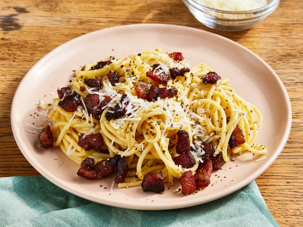

Spagetti alla Carbonara

Carbonara is a Roman dish made with eggs, hard cheese, and cured pork. Its signature rich and silky sauce comes from beaten eggs tossed with hot pasta. The trick to making carbonara is making sure the pasta is hot enough to cook the eggs, but not so hot that they curdle.
Ingredients
- 2 teaspoons olive oil
- 1 pound guanciale (cured pork cheek), diced
- 1 Package of spagetti
- 3 large eggs
- 10 tablespoons grated Pecorino Romano cheese, divided
- salt and freshly ground black pepper to taste
Steps to make
- Heat olive oil in a large skillet over medium heat; add guanciale (see Cook's Note). Cook, turning occasionally, until evenly browned and crispy, 5 to 10 minutes. Remove from heat and drain on paper towels.
- Bring a large pot of salted water to a boil. Cook spaghetti in the boiling water, stirring occasionally until tender yet firm to the bite, about 9 minutes. Drain and return to the pot. Let cool, stirring occasionally, about 5 minutes.
- Whisk eggs, 1/2 of the Pecorino Romano cheese, and some black pepper in a bowl until smooth and creamy.
- Pour egg mixture over pasta, stirring quickly, until creamy and slightly cooled. Stir in guanciale.
- Top with remaining Pecorino Romano cheese and more black pepper